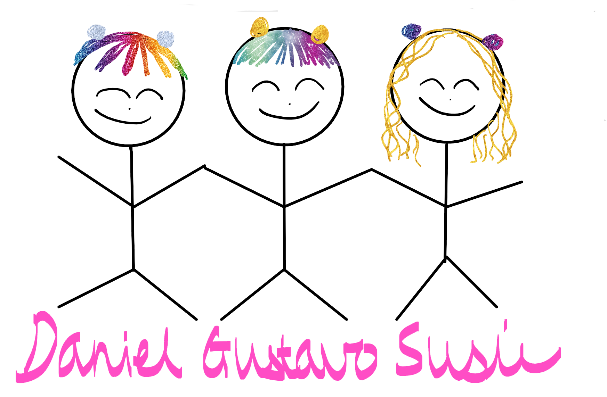

What-to-do
Bienvenue à WHAT-TO-DO. Connectez-vous pour partager l'amour et l'unité de notre terre.

Le but de notre site
WHAT-TO-DO est un réseau social pour partager l'amour et l'unité de notre terre. Le but est de partager nos connaissances sur toutes les domaines, surtout sur la nature. Sur ce site, vous pouvez rester en contact avec votre entourage par de nombreuses manières.
Utilisation gratuite et facile
Notre site est crée pour les débutants des réseaux sociaux jusqu'aux professionels. La couleur représentative de notre site est le rose. L'utilisation est 100% gratuite. Les 3 fondateurs - Gustavo, Daniel et Susie - sont là pour toutes vos questions et propositions.